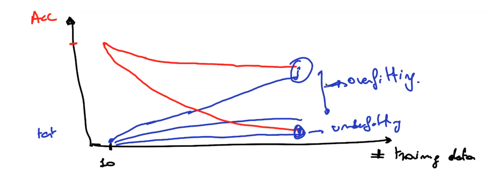

Underfitting en Overfitting
hoe kan je zien of er sprake is van under of overfitting ?
Je kan underfitting al zien als de accuracy obv van je trainingset onder de gemiddelde score blijft (R2 score onder nul). Bij overfitting is het dan eerder dat de trainingset heel goed scoort en op de testset slechter scoort. Vraag is natuurlijk wat is slechter ?
Dit hangt af van je case maar je verkiest eerder een model met accuracy 50% op testset dan een model met 30% op testset ook al zou de accuracy op trainingset bij de tweede dichter in de buurt liggen dan bij de eerste.
over en underfitting in een grafiek

Je kan de acccuracy van je model in een grafiek gieten. Beginnen met een klein aantal trainingsamples te gebruiken en dat aantal steeds verhogen. Hierdoor krijg je normaal een dalende lijn (bovenste rood) van je accuracy op trainingsdata.
Idem doe je voor de testset (klein aantal testsamples en dan meer en meer) maar hier zou je dan een stijgende lijn moeten zien (bovenste blauwe). Als de lijnen elkaar bijna raken zit je goed.
Als de rode lijn echter naar beneden duikt (laagste rode) en ook de blauwe beneden blijft (onderste blauwe) dan is er sprake van underfitting.
Als de rode lijn boven blijft en de blauwe lijn blijft relatief beneden (middelste blauwe lijn) dan is er sprake van overfitting